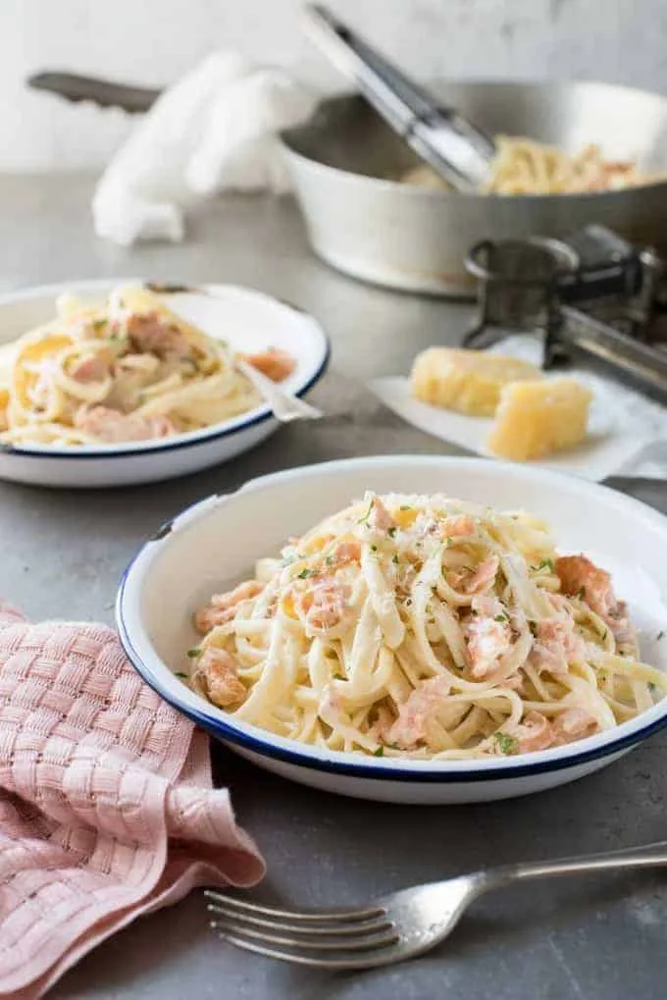

Salmon Alfredo

Description
A creamy Alfredo pasta tossed with flakes of hot smoked salmon (or plain cooked salmon). Make sure you follow the steps to toss the sauce and pasta with some of the pasta cooking water – it makes all the difference to create a luscious creamy sauce using only 1/2 cup of cream!
Ingredients
- 8 oz / 250g dried fettuccine
- 3 tbsp / 50g unsalted butter
- 1 small shallot
- ½ cup / 125 ml heavy cream
- ¾ cup / 185 ml freshly grated Parmigiano Reggiano or parmesan
- ¼ teaspoon salt
- Good grind of black pepper
- 6-7 oz / 180 to 200g hot smoked salmon fillet
Directions
- Bring a large pot of salted water to boil. Add the fettuccine and cook until al dente (still firm but just cooked through). (Note 6)
- Meanwhile, melt the butter in a deep fry pan over medium high heat. (Note 7)
- Add the shallots and sauté for 2 minutes or until tender.
- Add the cream and bring to boil. Turn heat down to medium low and simmer for 3 minutes.
- Remove the fry pan from the heat and stir through the Parmigiano Reggiano, salt and pepper until the sauce is smooth.
- TAKE OUT 1/2 cup of pasta water PLUS scoop out an extra mug (extra, just in case). Then drain the pasta in a colander.
- Transfer the pasta and 1/2 cup of reserved pasta water into the fry pan with the sauce. Add salmon. Return the fry pan to the stove over medium heat. Toss very gently to coat the pasta in the sauce and allow the sauce to emulsify (Note 6) for 1 1/2 – 2 minutes, until the sauce coats the pasta – there should be no sauce pooled at the bottom of the skillet. (Note 7)
- Remove from the stove and serve immediately, garnished with extra Parmigiano Reggiano and fresh parsley, if using
Back To Recipes